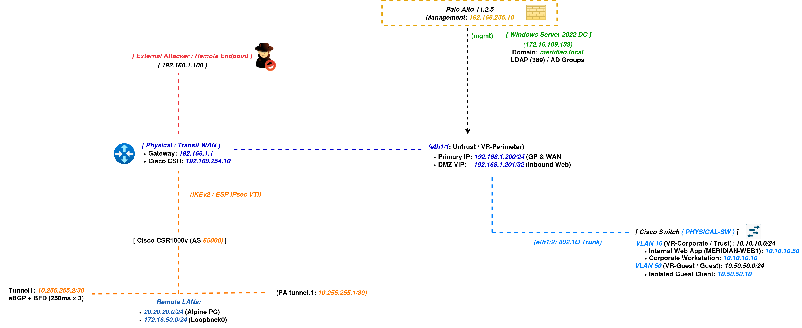
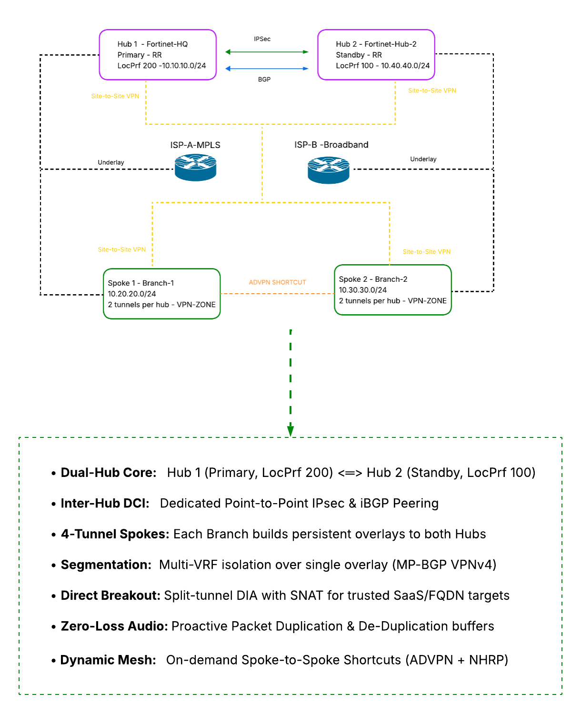
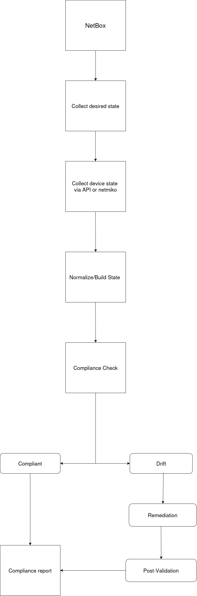

Documented Technical Evidence
Production-grade networking implementations demonstrating enterprise multi-site routing, Palo Alto Next-Generation perimeter security, Fortinet SD-WAN fabrics, F5 BIG-IP LTM application delivery, hybrid cloud (Azure), automated NetDevOps CI/CD validation, and structured operational troubleshooting.
Every implementation is backed by verifiable artifacts: live device configurations, Wireshark packet captures (.pcap), failover demonstration recordings, Grafana telemetry graphs, and ITIL change management records.
Featured Projects
End-to-end architectures documented with topologies, configuration files, packet captures, and failover validations.

Meridian Financial Services
A production-grade, 5-site enterprise network (New York HQ, Chicago, Dallas, Miami, and an Ashburn DR site). Integrates dual-ISP eBGP, multi-area OSPF, ASA HA firewalls, Cisco ISE 802.1X NAC, Azure hybrid BGP over IPsec, and centralized Splunk/Grafana monitoring.

Palo Alto NGFW & Zero Trust Architecture
A 15-project progression on PAN-OS 11.2.5 interconnected with Cisco CSR1000v and Windows AD. Covers App-ID Zero Trust, TLS 1.3 forward proxy decryption, 187k-domain EDL sinkholing, Captive Portal RBAC, Zone Protection absorbing 4M SYN packets, GlobalProtect SASE, and Terraform/Python auditing.

Fortinet FortiGate SD-WAN & Fabrics
A 15-project enterprise SD-WAN fabric on FortiOS. Features dynamic spoke-to-spoke ADVPN shortcuts, proactive packet duplication delivering 0% voice loss under link drops, dual-hub disaster recovery, MP-BGP multi-VRF segmentation, DIA SaaS steering, and sub-second BFD failover verified via Linux tc netem.

F5 BIG-IP LTM Traffic Management Lab
A 12-module, packet-verified ADC engineering lab built on F5 BIG-IP VE (TMOS 21.1) in Microsoft Azure. Features TLS 1.3 offloading and bridging, 110 µs TMM redirect iRules, dynamic Least Connections balancing, Cookie Insert persistence, multi-IP Azure SNAT pools, and sustained failover across 266k+ requests with 0 errors.

Root Cause Analysis Lab
Nine end-to-end network incidents investigated using an ITIL diagnostic workflow covering user symptoms, packet captures, root-cause analysis (RCA), configuration remediation, and post-change verification across OSPF, BGP, NAT, DHCP, and HSRP.
In progress

Automated Network Compliance Engine
A modular Python network compliance engine that uses NetBox as a Source of Truth (SOT) to compare desired state against live network devices via Netmiko, NETCONF, and RESTCONF. Features mathematical change validation with Batfish, dependency-aware execution, and automated drift remediation.
All implementations include reproducible code and evidence archives.
Proof of Skills
Validated technical competencies backed by configuration files, PCAPs, failover tests, and change records.
Routing & Switching
Enterprise Core & Distribution
Multi-area OSPF design, dual-homed eBGP route manipulation via AS-Path prepending and route-maps, Rapid-PVST+ root bridge tuning, LACP EtherChannels, and sub-second HSRP failover testing across 5 enterprise sites.
Next-Gen Security
Palo Alto NGFW & Zero Trust
Layer 7 App-ID Zero Trust policy enforcement, TLS 1.3 Forward Proxy Decryption, 187k-domain EDL sinkholing, Zone Protection absorbing 4.03M SYN flood packets, and multi-vendor eBGP peering over IPsec VTI.
View Evidence →
SD-WAN & Multi-Path
Fortinet SD-WAN & ADVPN
Dynamic spoke-to-spoke ADVPN shortcuts, zero-loss proactive packet duplication (0.0% voice drop under impairment), multi-region dual-hub disaster recovery, and MP-BGP VPNv4 multi-VRF segmentation.
View Evidence →
Application Delivery
F5 BIG-IP LTM & Traffic Management
TLS 1.3 SSL offload and bridging, high-performance 110 µs TMM redirect iRules, dynamic Least Connections load balancing (501 vs 499 sockets), Cookie Insert persistence, and Azure multi-IP SNAT pools.
View Evidence →
Identity & Zero Trust
Cisco ISE, AD & GlobalProtect
Cisco ISE 802.1X dynamic VLAN assignment (EAP-TLS/PEAP), MAB profiling for VoIP, Windows AD LDAP integration for User-ID Captive Portal RBAC, and GlobalProtect SASE remote access.
View Evidence →
Hybrid Cloud
Azure VNet & BGP Routing
Route-based Site-to-Site IPsec/IKEv2 VPN connecting on-premises firewalls to Azure VNet Gateways, dynamic BGP route propagation (ASN 65515), NAT Gateway outbound egress, and NSG micro-segmentation.
View Evidence →
NetDevOps & Automation
CI/CD, Terraform & Batfish
Infrastructure as Code using NetBox/Nautobot SOT, Terraform PAN-OS rulebase auditing, Python automated drift remediation, Ansible playbooks, and Batfish mathematical modeling in GitHub Actions.
View Evidence →
Packet Forensics
Wireshark & PCAP Deep Dive
Deep-packet forensic captures analyzing decrypted TLS streams, F5 Ethernet trailer metadata, ADVPN NHRP redirects, IKEv2 Phase 1/2 negotiations, and DoS TCP reset terminations.
View Evidence →
Observability & SIEM
Splunk, Grafana & Telemetry
SNMPv3 time-series telemetry pipelines using Telegraf and Grafana for protocol state monitoring (HSRP/OSPF), PRTG automated threshold alerts, and centralized Splunk SIEM dashboards tracking ASA and ISE audit logs.
View Evidence →
Root Cause Analysis
Incident Triage & Root Cause Analysis
Nine end-to-end incident lifecycles investigated from user symptom to root cause and post-change validation across OSPF drops, DHCP starvation, NAT misconfigurations, and BGP route leaks.
View Evidence →Network Operations
Standard operating procedures, ITIL change management, and structured root-cause analysis.
Change Governance
ITIL Change Requests & Runbooks
Production-standard operational documentation featuring formal Change Requests (CR-001 through CR-005) with back-out/rollback plans and step-by-step Runbooks (RB-001 through RB-005).
View Runbooks →
Incident Management
ServiceNow-Style Ticketing
ServiceNow-style incident tickets tracking outage symptoms, assigned priority, triage timeline, configuration diffs, and verified technical resolution.
View Tickets →
Root Cause Analysis
Root Cause Analysis Lab
Nine documented network outage investigations with supporting CLI output, PCAPs, root-cause analyses, and post-remediation verification across L2 to L7 protocols.
View Incidents →Featured Writing
Deep dives into routing, wireless, and network fundamentals from my Networking Notebook.
Contact
Interested in discussing network engineering, infrastructure design, NetDevOps automation, or technical opportunities?
Contact Me → GitHub →